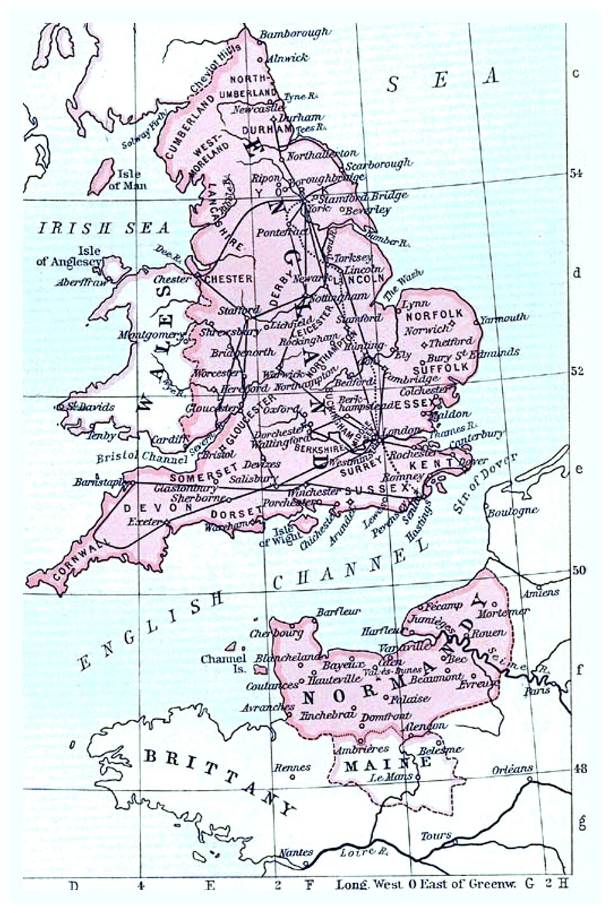
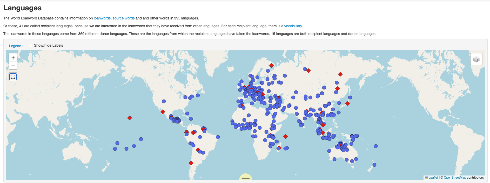
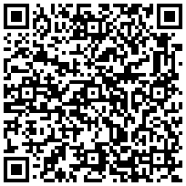

Borrowing: How Languages Take Words
LING 150C, Week 9
![]()
October 20, 2026
Journal (5 min)
Choose one and write silently.
Option A
Pick a word you use every day that you know (or suspect) came from another language. What language? Why do you think it came in?
Option B
Do you ever mix languages when you talk with family or friends? What does it sound like? Is it the same as using a borrowed word?
Reminders
Writing Assignment 1 Final is due Friday, October 23 at 11:59pm.
Quiz #4 opens Friday, October 23 and closes Monday, October 26 at 11:55pm.
Thursday, October 22: Midterm review. Bring questions and your notes.
- Review sheet uploaded to this week’s module in Lamakū
Midterm Exam: Tuesday, October 27, in class, open notes (no laptops). Covers Weeks 1-8. Today’s material is not on the midterm.
Today’s Plan
- What counts as borrowing?
- Why languages borrow: the story of English
- Borrowing into Hawaiian: sounds and missionaries
- Activity: exploring the World Loanword Database
- Who decides? The Hawaiian Lexicon Committee
What Counts as Borrowing?
Borrowing: Language Features Move
Languages change from the inside (natural change) and by acquiring features from other languages. The second way is borrowing (also called “copying”). Borrowed features are loans.
| Type | Example | Source |
|---|---|---|
| Sound | [ʒ] in pleasure, beige, rouge | French (Middle English period) |
| Word | Honolulu in English; pipi ‘cattle’ in Hawaiian | Hawaiian; English beef |
| Word ending | -s in he sits, replacing -eth | Old Norse |
| Sentence structure | Hawaiian i luna o ke Kīnaʻu (‘on board the Kinau’) | English |
| Meaning (calque) | Fijian raica cake (‘look upwards at’) now means ‘respect’ | English look up to |
Clue to a loan: [ʒ] is rare in English and never starts a word. Odd sounds can give away outside origin.
Borrowing or Code-Switching?
Code-switching = bilinguals switching languages when talking to other bilinguals. It is not borrowing.
Ua hana mākou me ka wikiwiki real fast kind. ‘We did it very quickly without much care.’ (Hawaiian with English)
In pairs. For each, decide: loan or code-switch? What’s your evidence?
- English speakers say Honolulu in an English sentence
- Two bilinguals switch to Spanish for a whole sentence
- A Pidgin speaker says Pau hana, we go kaukau
- A Hawaiian speaker says kelepona (‘telephone’)
Test ideas: Do monolinguals use it? Is it adapted to the recipient language’s sounds and grammar? Is it used consistently?
Why Languages Borrow
Why Does English Have Both Cow and Beef?
Look at the animal and the meat:
On the farm
- cow
- pig
- sheep
- calf
- deer
On the plate
- beef
- pork
- mutton
- veal
- venison
Think first: Why would one language have two different sets of words for the same animals? And what about chicken?
The Answer: 1066 and Two Classes
Who did what after the Norman conquest
- English speakers (peasants) raised the animals, using English words: cow, pig, sheep
- French speakers (the Norman elite) ate the meat, using French words: boeuf → beef, porc → pork, mouton → mutton, veau → veal
The echo of power in today’s menu
- Same animals, two languages, two social classes
- The animal word stayed English; the meat word came from French
- Prestige: French commence, reside, purchase beside English begin, live, buy
What about chicken? It’s the English word for both bird and meat. The French-derived word poultry names the category.

Needed vs. Intimate Borrowing
Needed (“cultural”) borrowing
A new thing or idea arrives; the language needs a name for it.
- Latin: bishop, monk
- Hawaiian: kelekalama ‘telegram’, lekiō ‘radio’
- English: ʻukulele, hula
Intimate borrowing
Constant close contact and bilingualism. Even sounds, particles, and constructions are borrowed. Over time the languages can converge, or the weaker one can be lost.
- Norse: they, egg, take
What’s borrowed depends on how close the contact is: nouns first; then verbs and adjectives; grammatical particles (prepositions, conjunctions, affixes) last.
Counterexample: Germany ruled Western Samoa 1890-1914 with business interests since the 1850s. Samoan borrowed only a handful of rarely-used German words. Why?
Borrowing into Hawaiian
After Cook: Build or Borrow?
New things arrived and needed names. At first, Hawaiians mostly built words:
| Strategy | Hawaiian example |
|---|---|
| Compound | ʻīlio-nui ‘horse’ (‘dog-big’), later lio; mokulele ‘airplane’ (‘ship-fly’) |
| Semantic expansion | pūpū ‘shell’ → ‘buttons’; moku ‘island’ → ‘ship’; uila ‘lightning’ → ‘electricity’ |
| Borrowing | pipi ‘cattle’ (beef), ʻaila ‘oil’, kākini ‘stocking’ (before 1810); kelekalama, kelepona, lekiō |
Hawaiians were among the most literate people in the world then, avid readers of newspapers.
Discuss: Why might speakers prefer a compound like mokulele over borrowing the English word?
Activity: Whose Rule? (6 min)
Hawaiian borrowed English words in two periods. Compare the sets:
| Before the missionaries | English | After the missionaries | English |
|---|---|---|---|
| kāpiki | cabbage | kula | school |
| lami | rum | pela | spell |
| puke | book | kopa | soap |
| pele | bell | hipa | sheep |
| pine | pin | Pokekona | Boston |
| huelopoki | whaleboat | Kenemaka | Denmark |
In pairs: (1) What vowel is added after a final consonant in each set? (2) What happens in clusters? (3) Who was in control of the form?
“Take My Word for It”: Words Imposed
Missionaries (1820s on) taught religion and school subjects in Hawaiian, so they, not Hawaiian speakers, chose the new words. Schütz (1976): “Take my word for it.”
Built from Hawaiian
- kāhikolu ‘trinity’ (‘one-three’)
- alahou ‘resurrection’ (‘rise again’)
- akua ‘god’ → the Christian God
- keʻa ‘crossed wood’ → ‘cross’
Borrowed
- hīmeni ‘hymn’, kāpaki ‘sabbath’, papakema ‘baptism’, ʻānela ‘angel’
- “Eye borrowings” (from spelling, not sound): hīmeni; ʻeuanelio ‘gospel’ (Latin/Greek); ʻaeko ‘eagle’ and meli ‘honey’ (Greek); kinola ‘lyre’ and naheka ‘snake’ (Hebrew)
Discuss: Compare with Honiara last week: who decides which words and which languages count?
Explore the Data: The World Loanword Database
Where Are WOLD’s Languages?

WOLD: 41 recipient languages (red diamonds) and their donor languages (blue dots)
Look: Where are the donor languages (blue) clustered? Where are the Pacific languages?
The World Loanword Database (WOLD)
WOLD (Haspelmath & Tadmor 2009) is a free online database: word lists for 41 languages, each with 1,000-2,000 entries, written by experts. Every entry is coded for borrowing:
| Code | Meaning |
|---|---|
| 1 | clearly borrowed |
| 2 | probably borrowed |
| 3 | perhaps borrowed |
| 4 | very little evidence for borrowing |
| 5 | no evidence for borrowing |
Each loan lists its source word and donor language.
Austronesian languages in WOLD: Hawaiian, Takia (Papua New Guinea), Indonesian, Malagasy (Madagascar). Plus Ceq Wong, an Austroasiatic language of Malaysia, for contrast. We’ll practice on English.
Example row (Hawaiian): pipi · ‘the cattle’ · 1. clearly borrowed · source word beef (English)
Predict: What percent of English words do you think are clearly borrowed?
Demo: English in WOLD (4 min)
Open wold.clld.org/vocabulary/13 (English). Set Borrowed status to 1. clearly borrowed.
Before we look, predict which of these English words are borrowed:
cattle · money · school · tea
All four are borrowed.
- cattle ← Latin capitāle
- money ← Anglo-Norman French
- school ← Greek skholē
- tea ← Min Chinese tiä
bread · mother · hand · eat are native (no evidence for borrowing).
Then: they, sky, egg ← Old Norse; tattoo ← Tahitian tātau. Which donor is biggest overall?
Activity: Loanword Lab (22 min)
Groups of 3-4. Each group takes one language. Open the worksheet, then make a copy.
| Language | Word list | Donors |
|---|---|---|
| Hawaiian | wold.clld.org/vocabulary/30 | wold.clld.org/language/30 |
| Takia | wold.clld.org/vocabulary/29 | wold.clld.org/language/29 |
| Ceq Wong | wold.clld.org/vocabulary/26 | wold.clld.org/language/26 |
| Indonesian | wold.clld.org/vocabulary/27 | wold.clld.org/language/27 |
| Malagasy | wold.clld.org/vocabulary/28 | wold.clld.org/language/28 |
- Count the clearly borrowed words, and work out the percentage (3 min)
- Donors: biggest three, two examples each, and why (5 min)
- What kinds of words are borrowed? (5 min)
- Compare eight meanings: cattle, bread, money, school, tea, mother, hand, to eat (5 min)
- Find a surprise (2 min)

go.hawaii.edu/NfS
Report-Out: What Patterns Do We See?
| Language | % clearly borrowed | Top donor and why | Surprise |
|---|---|---|---|
| Hawaiian | |||
| Takia | |||
| Ceq Wong | |||
| Indonesian | |||
| Malagasy |
Discuss: Which language borrowed the most? Which donor languages are not European? What do the eight comparison meanings have in common?
What the Database Shows
| Language | Clearly borrowed | Biggest donors |
|---|---|---|
| Hawaiian | 12.7% | English, Greek, Māori |
| Takia | 23.1% | English, Tok Pisin, Bargam |
| Ceq Wong | 33.6% | Malay (95%) |
| Indonesian | 30.2% | Sanskrit, Dutch, Arabic |
| Malagasy | 12.5% | French, Malay, English |
| Meaning | Hawaiian | Takia | Indonesian | Malagasy | Ceq Wong |
|---|---|---|---|---|---|
| cattle | pipi (beef) | makao (bull-cow) | sapi (Javanese) | biby fiompy (native) | (no entry) |
| money | kālā (dollar) | moni (Tok Pisin) | duit (Dutch) | vola (native) | dwet (Malay) |
| school | kula (English) | skul (Tok Pisin) | sekolah (Portuguese) | sekoly (English) | kolah (Malay) |
| mother | makuahine | tna- | ibu | reny | mɔ̃y |
| hand | lima | bani- | tangan | tanana (probably Malay) | cɑs |
Patterns: introduced things are borrowed; body parts and kin words mostly are not; the donor depends on who the language was in contact with.
Who Decides? Borrowing and Language Planning
Language Nests and the Purist Turn
Language planning = making and enforcing decisions on language use: education, writing systems, translators, and which words to use for new concepts.
- In the 1800s, nearly all Pacific language planning was done by religious organizations
- Hawaiian and Māori seemed headed for extinction ~50 years ago. Activists set up immersion preschools, language nests: kōhanga reo (Aotearoa, 1982) and pūnana leo (Hawaiʻi, 1983), which grew into schools and universities
- Adults wanted to use the language at home and work, so they needed thousands of new words. The Polynesian Languages Forum (1991) coordinated this
- Most activists wanted to distance the language from colonial languages: avoid loans as much as possible, build words by compounding and expansion
Computer: kamepiula (loan) or lolouila (lolo ‘brain’ + uila ‘electricity’)? Māori: rorohiko (roro ‘brain’ + hiko ‘spark’).
Debate: Is a “purist” policy good for a small language, when borrowing is a natural process?
How Does a Committee Make a Word?
The Hawaiian Lexicon Committee (founded 1987; kūpuna and native speakers from the start) meets 4-6 times a year. Every word must be approved at two meetings. Their dictionary, Māmaka Kaiao, records ten strategies:
| Strategy | Example |
|---|---|
| Describe the concept in Hawaiian words | uila mahu pele ‘geothermal electricity’ (‘electricity-steam-volcano’) |
| Combine words | poelele ‘satellite’; hamulau ‘herbivore’ |
| Shorten and combine | ikehu ‘energy’ (ika + ehu) |
| Add affixes | kalaianiau ‘climatology’ (kalai- ‘study of’) |
| Extend an old word | haumia ‘pollution’; hoʻoili ‘download’ (also ‘transplant’) |
| Borrow from another Polynesian language | pounamu ‘jade’ (Māori); makahiʻo ‘explore’ (maka + Tahitian hiʻo) |
| Hawaiianize a foreign word | naelona ‘nylon’; kaimine ‘saimin’ (Japanese); kokeiʻa ‘prairie dog’ (Ute); ʻōmā ‘lobster’ (French homard) |
Discuss: The committee builds first but still borrows. Is that purism? What would you call it?
Wrapping Up
Putting It Together
| Question | Answer from today |
|---|---|
| What is borrowing? | Sounds, words, endings, structures, meanings copied from another language; not code-switching |
| Why borrow? | Needed (new things) or intimate (close contact); also prestige (“unnecessary”) |
| What are the alternatives? | Compounding, semantic expansion, calques |
| What happens to loans? | Sound adaptation, semantic shift, reanalysis |
| Hawaiian history | Early builds, speaker-shaped loans, missionary-imposed forms, Hawaiian words that travel |
| Why linguists care | Etymological borrowing can disguise loans as inherited words |
| What gets borrowed? | Nouns > verbs/adjectives > function words; introduced things (WOLD data); body and kin words mostly not |
| Who decides? | Missionaries, communities, language planners: borrow or build? |
Exit ticket (3 min): Pick one loanword from today (or one you use). What does it tell us about the relationship between the two languages, and how was it adapted?
For Thursday
- Midterm review (Oct 22): bring your notes and questions (review sheet on Lamākū)
- WA1 Final due Friday, October 23 at 11:59pm
- Quiz #4 opens Friday, October 23 (includes today’s material)
- Midterm Exam: Tuesday, October 27
- Read Ch. 17 - Hawaiian Literacy (Schütz) for the following week

LING 150C